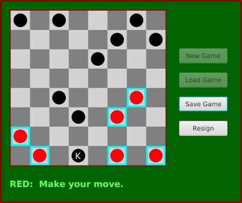

Programming Exercises for Chapter 11
This page contains several exercises for Chapter 11 in Introduction to Programming Using Java. For each exercise, a link to a possible solution is provided. Each solution includes a discussion of how a programmer might approach the problem and interesting points raised by the problem or its solution, as well as complete source code of the solution.
Exercise 11.1:
The sample program DirectoryList.java, given as an example in Subsection 11.2.2, will print a list of files in a directory specified by the user. But some of the files in that directory might themselves be directories. And the subdirectories can themselves contain directories. And so on. Write a modified version of DirectoryList that will list all the files in a directory and all its subdirectories, to any level of nesting. You will need a recursive subroutine to do the listing. The subroutine should have a parameter of type File. You will need the constructor from the File class that has the form
public File( File dir, String fileName ) // Constructs the File object representing a file // named fileName in the directory specified by dir.
Exercise 11.2:
Write a program that will count the number of lines in each file that is specified on the command line. Assume that the files are text files. Note that multiple files can be specified, as in:
java LineCounts file1.txt file2.txt file3.txt
Write each file name, along with the number of lines in that file, to standard output. If an error occurs while trying to read from one of the files, you should print an error message for that file, but you should still process all the remaining files. Do not use TextIO to process the files; use a Scanner or a BufferedReader to process each file.
Exercise 11.3:
For this exercise, you will write a network server program. The program is a simple file server that makes a collection of files available for transmission to clients. When the server starts up, it needs to know the name of the directory that contains the collection of files. This information can be provided as a command-line argument. You can assume that the directory contains only regular files (that is, it does not contain any sub-directories). You can also assume that all the files are text files.
When a client connects to the server, the server first reads a one-line command from the client. The command can be the string "INDEX". In this case, the server responds by sending a list of names of all the files that are available on the server. Or the command can be of the form "GET <filename>", where <filename> is a file name. The server checks whether the requested file actually exists. If so, it first sends the word "OK" as a message to the client. Then it sends the contents of the file and closes the connection. Otherwise, it sends a line beginning with the word "ERROR" to the client and closes the connection. (The error response can include an error message on the rest of the line.)
Your program should use a subroutine to handle each request that the server receives. It should not stop after handling one request; it should remain open and continue to accept new requests. See the DirectoryList example in Subsection 11.2.2 for help with the problem of getting the list of files in the directory.
Exercise 11.4:
Write a client program for the server from Exercise 11.3. Design a user interface that will let the user do at least two things: (1) Get a list of files that are available on the server and display the list on standard output; and (2) Get a copy of a specified file from the server and save it to a local file (on the computer where the client is running).
Exercise 11.5:
The sample program PhoneDirectoryFileDemo.java, from Subsection 11.3.2, stores name/number pairs for a simple phone book in a text file in the user's home directory. Modify that program so that it uses an XML format for the data. The only significant changes that you will have to make are to the parts of the program that read and write the data file. Use the DOM to read the data, as discussed in Subsection 11.5.2. You can use the XML format illustrated in the following sample phone directory file:
<?xml version="1.0"?> <phone_directory> <entry name='barney' number='890-1203'/> <entry name='fred' number='555-9923'/> </phone_directory>
(This is just a short exercise in basic XML processing; as before, the program in this exercise is not meant to be a useful phone directory program.)
Exercise 11.6:
The sample program Checkers.java from Subsection 7.5.3 lets two players play checkers. It would be nice if, in the middle of a game, the state of the game could be saved to a file. Later, the file could be read back into the file to restore the game and allow the players to continue. Add the ability to save and load files to the checkers program. Design a simple text-based format for the files. Here is a picture of my solution to this exercise, showing that Load and Save buttons have been added:

It's a little tricky to completely restore the state of a game. The program has a variable board of type CheckersData that stores the current contents of the board, and it has a variable currentPlayer of type int that indicates whether Red or Black is currently moving. This data must be stored in the file when a file is saved. When a file is read into the program, you should read the data into two local variables newBoard of type CheckersData and newCurrentPlayer of type int. Once you have successfully read all the data from the file, you can use the following code to set up the program state correctly. This code assumes that you have introduced two new variables saveButton and loadButton of type Button to represent the "Save Game" and "Load Game" buttons:
board = newBoard; // Set up game with data read from file.
currentPlayer = newCurrentPlayer;
legalMoves = board.getLegalMoves(currentPlayer);
selectedRow = -1;
gameInProgress = true;
newGameButton.setDisable(true);
loadButton.setDisable(true);
saveButton.setDisable(false);
resignButton.setDisable(false);
if (currentPlayer == CheckersData.RED)
message.setText("Game loaded -- it's RED's move.");
else
message.setText("Game loaded -- it's BLACK's move.");
drawBoard();